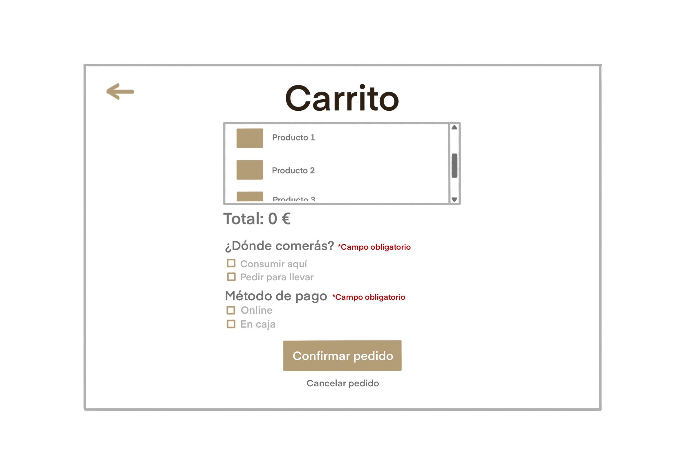
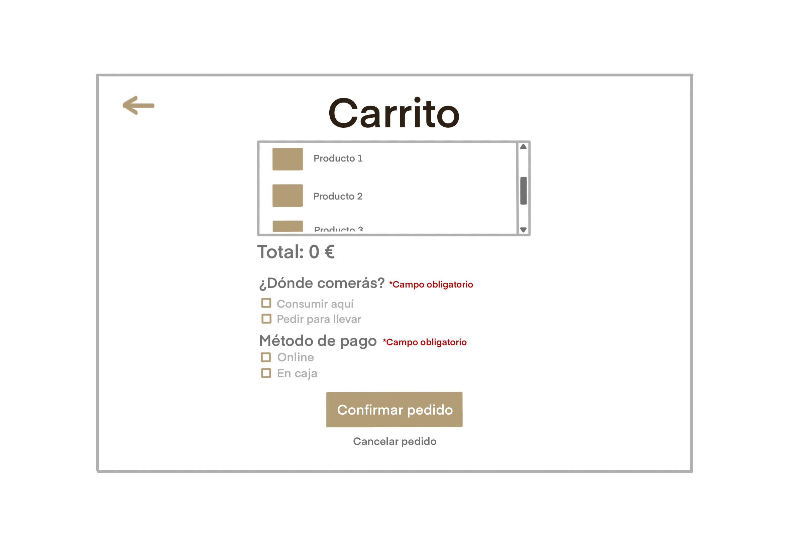
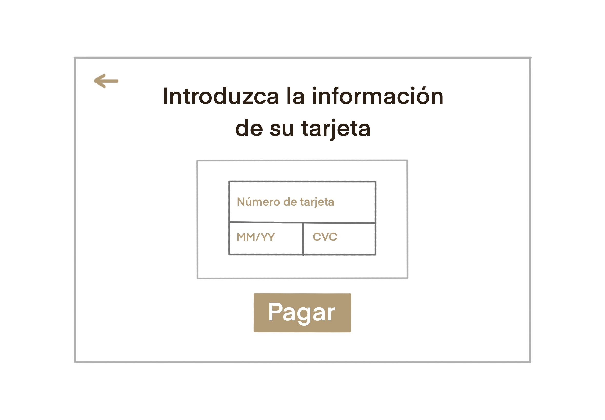
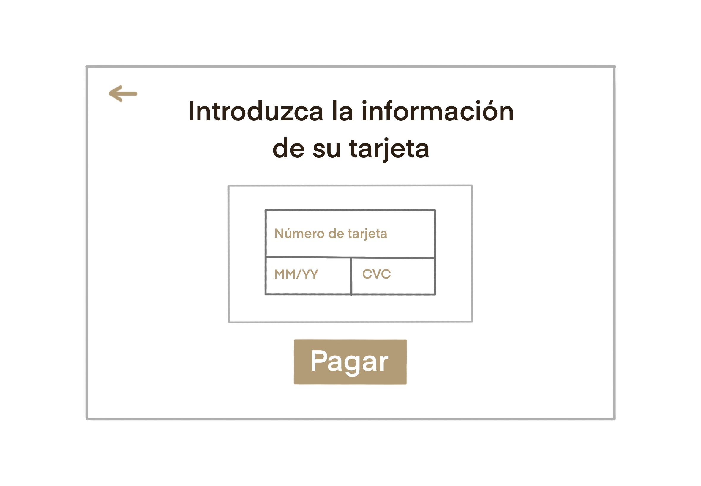
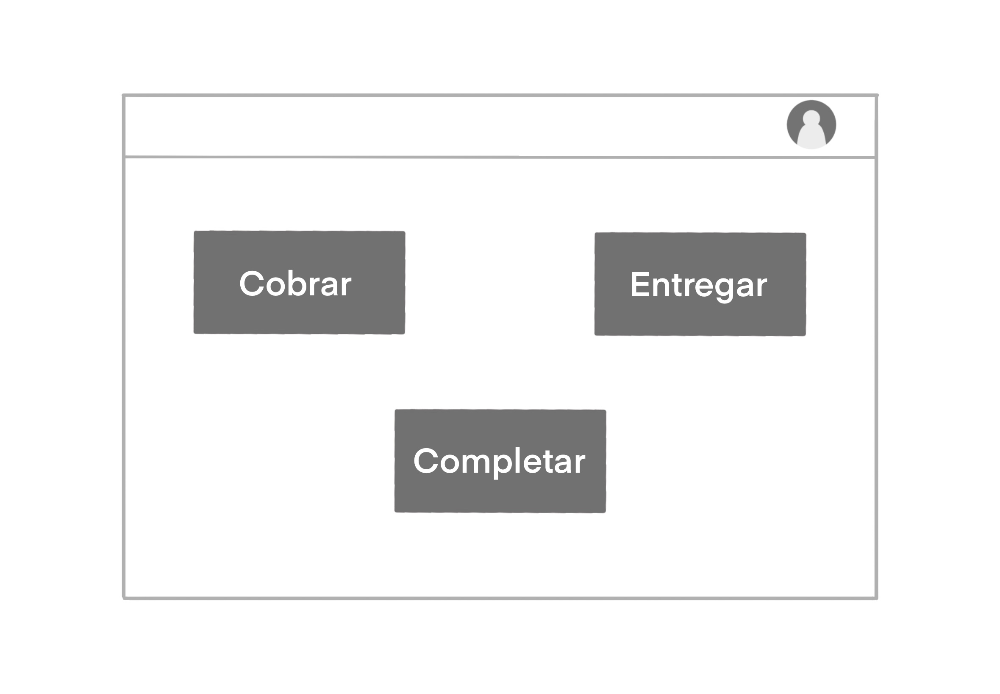
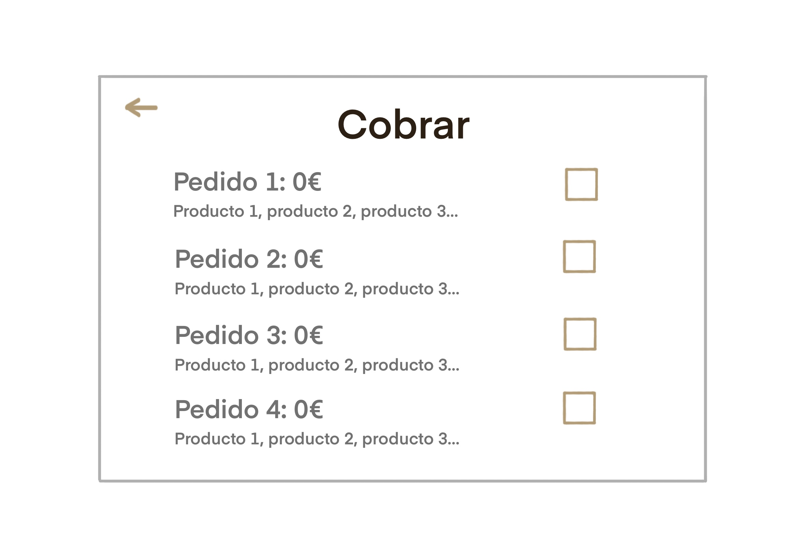
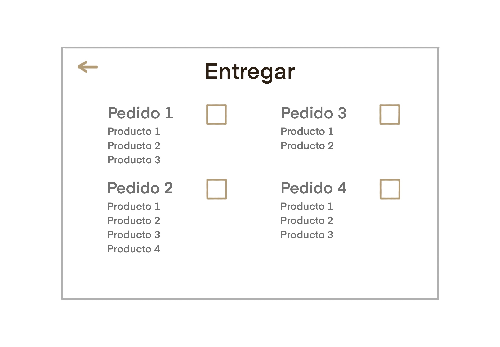
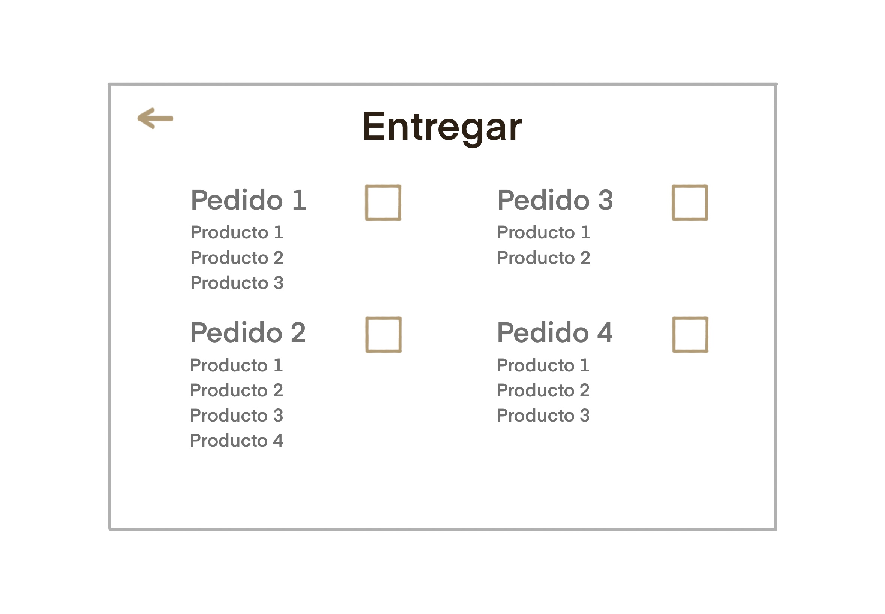
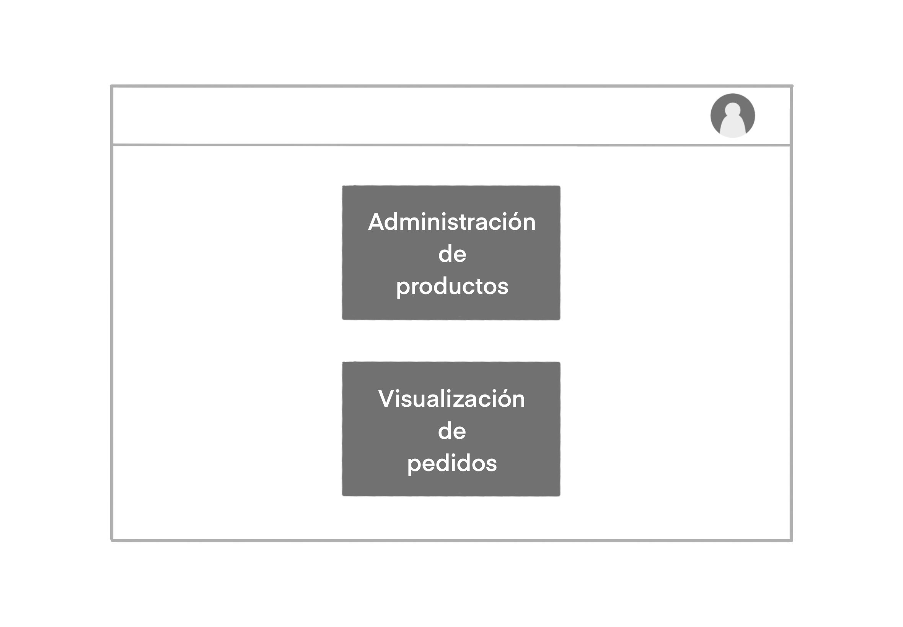

Esta es la página principal de inicio de sesión.
En ella tendremos la opción de iniciar sesión con un correo y contraseña si ya se está autenticado en el sistema
o de registrarse si no.

Para la interfaz que utilizarán los clientes contamos con varias pantallas:

 

En la primera imagen se muestra la pantalla principal que verán los clientes después de iniciar sesión. En ella, se muestra
en el panel horizontal superior el logotipo del restaurante junto con el icono del carrito y del perfil de usuario.
A continuación, aparece un filtro para los productos que se muestran disponibles en la lista más abajo.
La segunda imagen representa la información del perfil de usuario al clicar en el icono de la pantalla anterior.
Se muestran los pedidos de ese usuario junto con los productos que los componen y su estado.
Además se podrá editar el perfil.
La tercera imagen ofrece un resumen de los productos añadidos al carrito, accesible al pinchar en el icono de la primera pantalla,
además de opciones con checkboxes para elegir el método de pago y el lugar de consumición del pedido.
Para finalizar aparecen dos botones de confirmar y cancelar pedido.

 

La siguiente pantalla aparece cuando el cliente confirma el pedido. Así se muestra el id asociado al
pedido realizado, el estado de éste y un botón para volver a la pantalla principal.
La imagen central informa al cliente del estado de un pedido, que ha seleccionado previamente de la lista de pedidos de su perfil.
De manera concisa se pueden ver los estados por los que ha pasado y los que le quedan por pasar.
Al seleccionar el pago online en la página del carrito, aparecerá esta interfaz para rellenar los datos
de la tarjeta con la que pagar.
Continuamos con la interfaz de los camareros:


 

Iniciamos con la pantalla que verán los camareros después de iniciar sesión. En ella, se muestra
en el panel horizontal superior el icono del perfil de usuario. Si se clica en este, le llevará a una pantalla
con el mismo aspecto que la del perfil del cliente excepto por la lista de pedidos realizados, que no estará.
Debajo, tres botones con las tres acciones que realiza un camarero en su jornada de trabajo.
Seleccionará la que quiera llevar a cabo en ese momento, llevándole a una de las siguientes pantallas.
Tras pinchar en el botón de cobrar, se observan todos los pedidos pendientes de cobro, con la cantidad a abonar
y una descripción con los productos que contienen. A su derecha se encuentran una casilla por cada uno de ellos,
que se marcará cuando se haya efectuado el cobro. Esto hará que se elimine el pedido de la lista.
Para completar un pedido, se lista al lado de su identificador los productos que faltan. Una vez el camarero los
haya conseguido, pinchará en su respectiva casilla y el pedido se eliminará de la lista.
La pantalla de entrega muestra los pedidos que están completos. De nuevo, el camarero pinchará en la casilla tras la
entrega y el pedido se eliminará de la lista.
El cocinero tiene una sola pantalla para mayor simplicidad de uso:

Se listan los pedidos solamente con los productos a cocinar (sin incluir los que debe añadir el camarero).
Conforme el cocinero vaya acabando cada producto del pedido, los va marcando, y pinchará terminar cuando estén todos.



El gerente podrá elegir entre dos acciones: administrar los productos o visualizar los pedidos.
Si elige la adminsitración de productos, se le mostrará el total de productos existentes y la lista de estos.
Podrá editarlos al pinchar en el icono del lápiz que hay en cada uno, y podrá crear uno nuevo clicando en el icono
del "+" abajo a la derecha.
Al decidir crear uno nuevo se abre una pestaña que le permite introducir toda la información del producto.


Por otro lado, podrá visualizar todo el historial de pedidos del restaurante al clicar el otro botón del inicio.
A la izquierda encontrará los pedidos que se encuentrar en preparación con la imagen del respectivo cocinero y demás información.
A la derecha, verá el resto de pedidos junto con su estado.
Si clica en alguno de los pedidos, se abrirá una nueva pantalla que listará los productos que contiene dicho pedido.